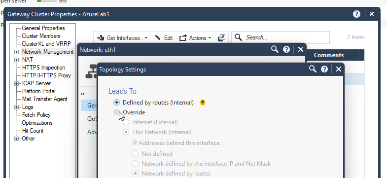

Post Deployment Actions
Step 1
Make sure the MGMT server has finished FTW.
- Connect with SSH to the MGMT server
- If you are in expert mode, the machine is ready. If not, wait until the VM finishes FTW and automatically reboots again.
Step 2
Run the Auto-MGMT script.
- Connect with SSH to the MGMT server
- Connect to the Azure portal using the credential proivded in the lab environment tab
- Run the following command:
/var/log/automgmt.sh
- Following the script prompt, fill in the Gaia version "R82.10", the public IPs of the cluster members as they are written in Azue portal and the private IP of the web server
- Once the script is done, connect to SmartConsole and open the cluster properties
- Open the network topology tab for eth1 and change the topology to "Override"

- Push policy